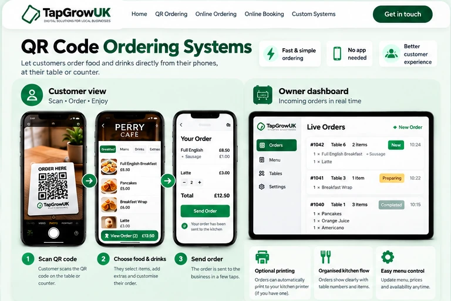

QR Code Ordering Systems
A simple digital ordering setup that helps customers order clearly and helps your staff receive those orders more efficiently.
How it can help your business
TapGrow creates tailored digital menus and ordering pages. Customers can browse food, choose extras and send an order using their phone. The order is then received by your business and can also be paired with a kitchen printing setup where suitable.
How it works
Customer scans the QR code
They scan a table QR code or open your ordering link from home.
Phone-based orderingThey place the order
They pick items, add any extras and send the order through the website.
Clear and easyYou receive it
The order appears in your order view, and compatible receipt printing can be added depending on setup.
Built around your workflowBuilt around your business
The menu, items, extras and order flow are set up around the way your business already works. We can also discuss what device setup you have, whether you want printing, and how staff will manage incoming orders.
Do customers need to download anything?
No. They simply open the ordering page in their browser.
Can this work with kitchen printing?
Yes, where the hardware and setup are compatible. We can discuss that with you before deployment.
Want a cleaner ordering system for your café, takeaway or food business?
Email TapGrow ↗Call 07859 005888From customer to business — at a glance
Scan a table QR code → choose food → send the order to the kitchen.

Illustrative customer screens and order-management view. Printer options depend on the customer’s equipment and setup.